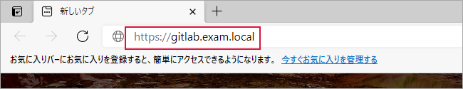
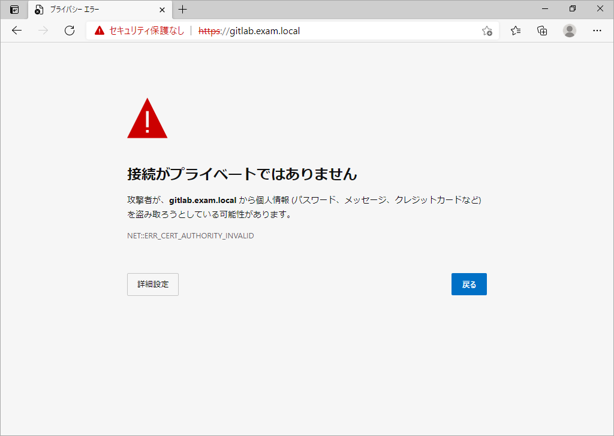
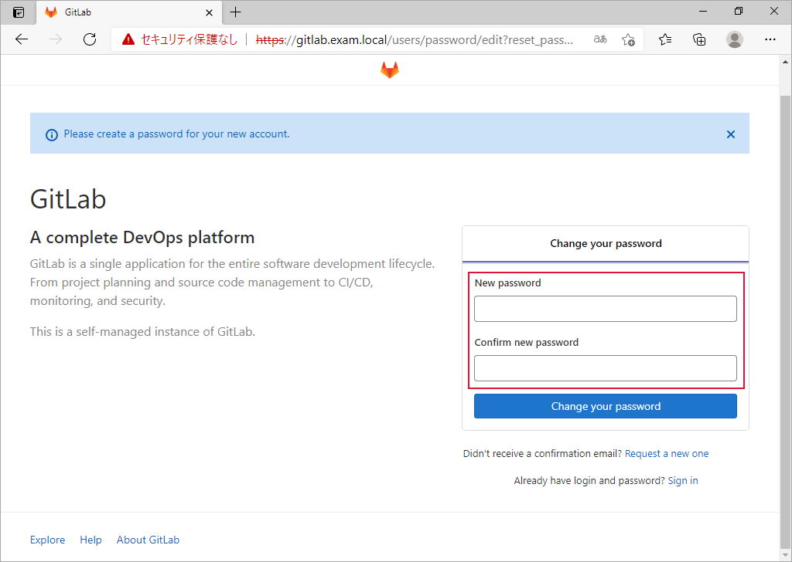
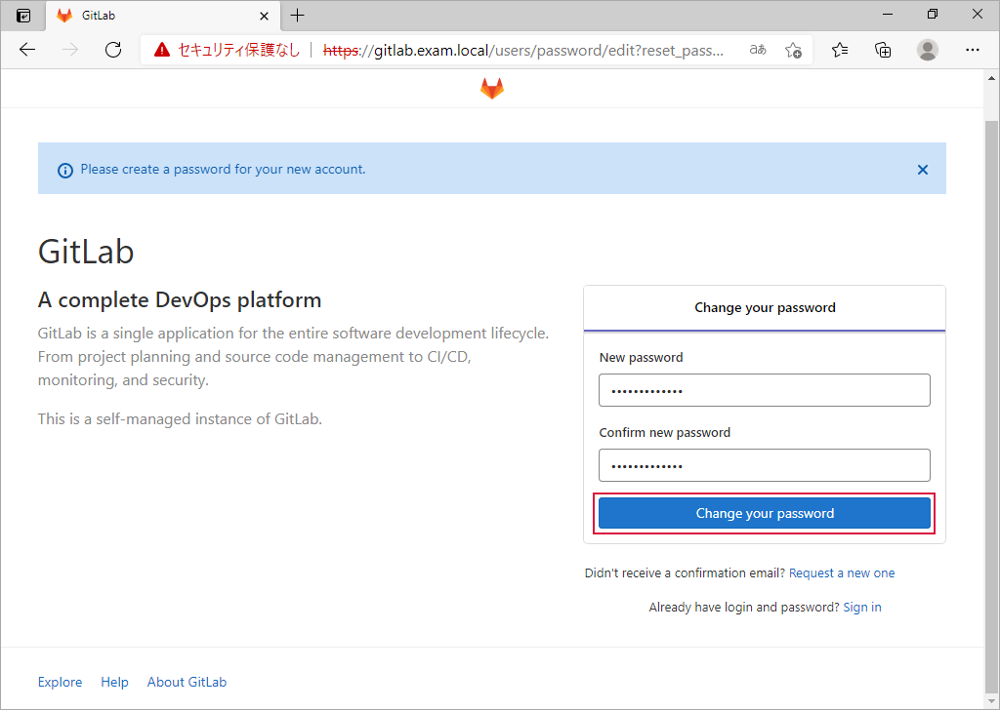
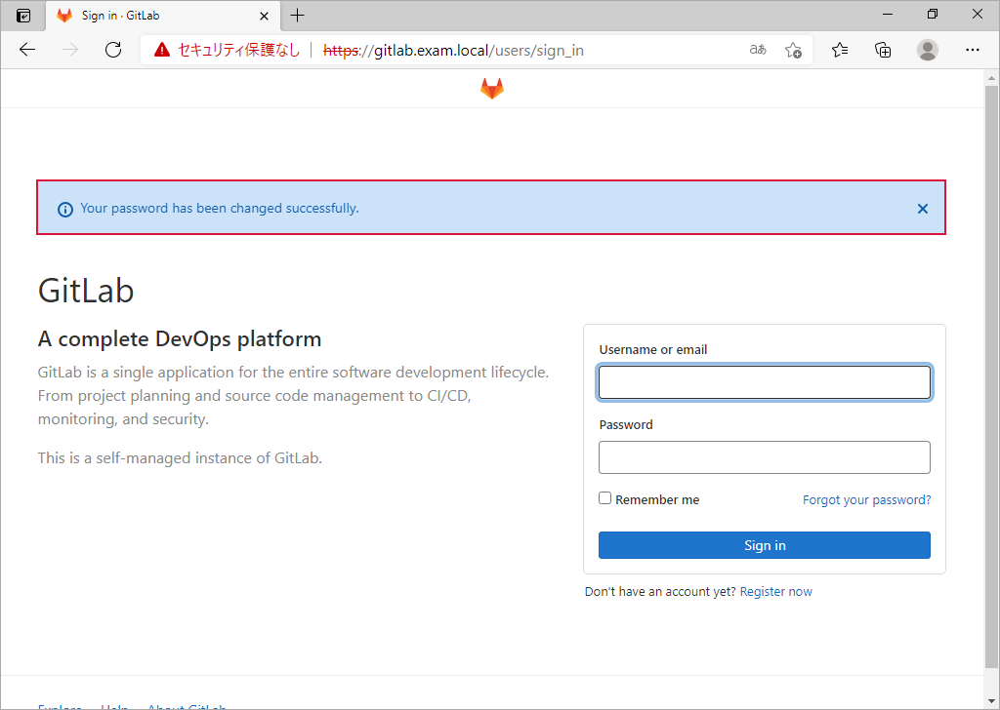
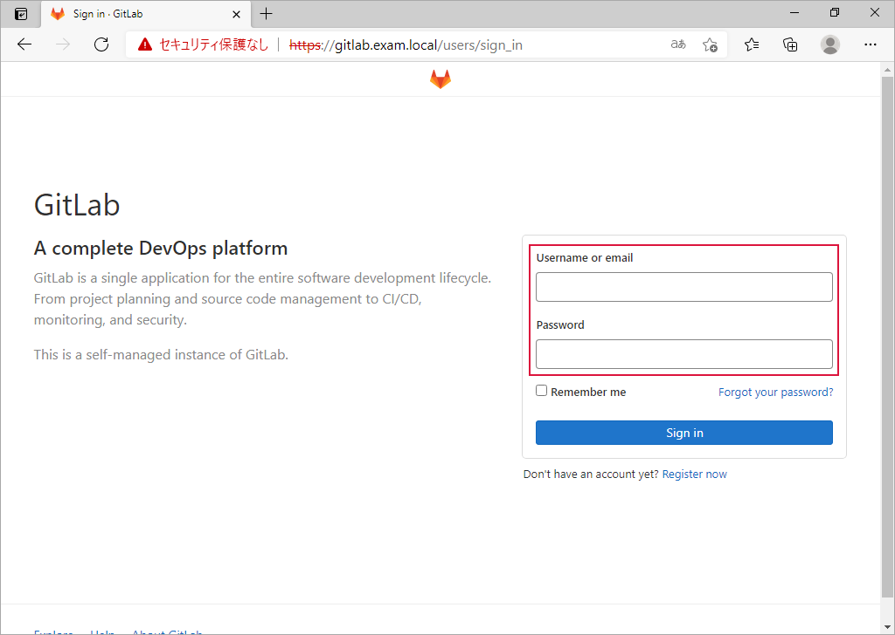
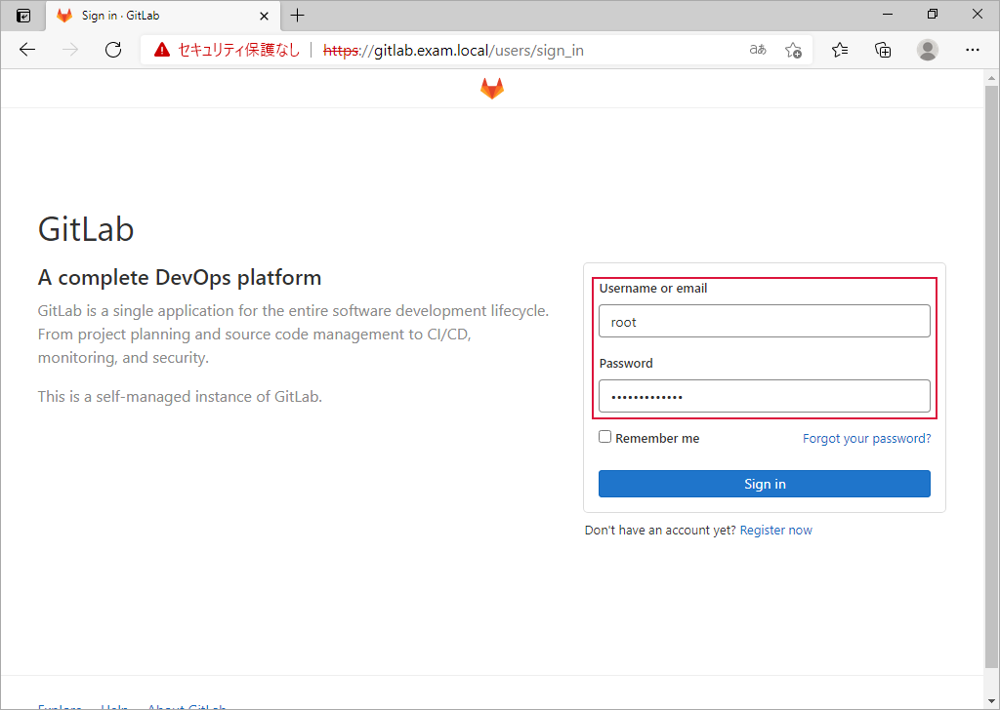
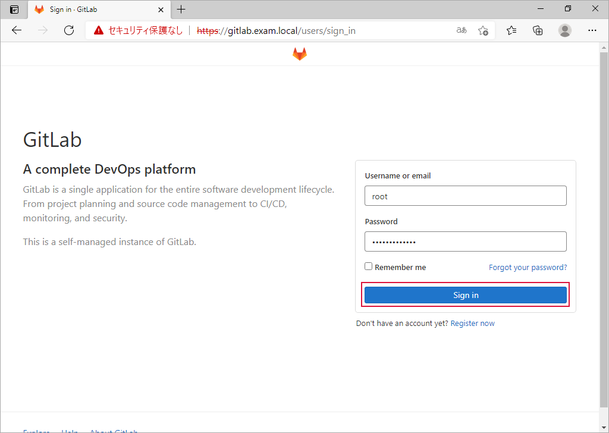
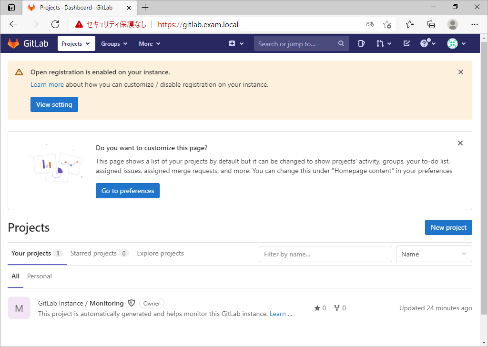

GitLab サーバーをデプロイ¶
CentOS 8.3 上に GitLab サーバーをデプロイします。
別途 DNS サーバーを用意し、名前解決をできるようにしています。
Note
このプレイを書くにあたり、下記のサイトを参考にしました。ありがとうございました。
インベントリ¶
---
all:
children:
gitlab_group:
hosts:
gitlab:
---
# host_vars/gitlab.yml
# ・ GitLab サーバーにコネクションするための情報
ansible_host: 192.168.23.41
ansible_user: ansible-user
ansible_ssh_private_key_file: ~/.ssh/id_ed25519
---
# group_vars/gitlab_group.yml
# ・ GitLab サーバーのデプロイに使用する変数
# -------------------- GitLab --------------------
# レポジトリ
gitlab_repo_url : "https://packages.gitlab.com/install/repositories/gitlab/gitlab-ce/"
gitlab_script_name : "script.rpm.sh"
gitlab_script_path: "/tmp"
# GitLab にアクセスするときの URL
gitlab_url: "https://gitlab.exam.local"
# 関連パッケージ
other_packages:
- curl
- policycoreutils
- openssh-server
- openssh-clients
- postfix
# GitLab のパッケージ
gitlab_package: gitlab-ce
# ファイアウォールに穴を開けるポート
gitlab_ports:
- http
- https
# サービス
gitlab_services:
- postfix.service
プレイ¶
---
# deploy_gitlab.yml
# ・ GitLab サーバーをデプロイする
# ・ GitLab Community Edition
- name: GitLab サーバーをデプロイする
hosts: gitlab_group
become: yes
gather_facts: no
tasks:
- name: 初期処理
ansible.builtin.import_role:
name: initial_processing
- name: GitLab のインストールと設定
ansible.builtin.import_role:
name: installing_and_configuring_gitlab
- name: ファイアウォールの設定とサービスを起動
ansible.builtin.import_role:
name: configure_firewall_and_start_service
---
# roles/initial_processing/tasks/main.yml
# ・初期処理
# ・インストール済みのすべてのパッケージを最新状態に更新
- name: インストール済みパッケージを更新
ansible.builtin.dnf:
name: '*'
state: latest
notify: reboot_system
- name: ハンドラーを実行（再起動）
ansible.builtin.meta: flush_handlers
---
# roles/initial_processing/handlers/main.yml
# ・初期処理のハンドラー
# ・サーバーを再起動
- name: 再起動
ansible.builtin.reboot:
listen: reboot_system
---
# roles/installing_and_configuring_gitlab/tasks/main.yml
# ・GitLab と関連パッケージをインストールし設定する
- name: 関連パッケージをインストール
ansible.builtin.dnf:
name: "{{ other_packages }}"
state: present
- name: GitLab package repository のスクリプトファイルの存在確認
ansible.builtin.stat:
path: "{{ gitlab_script_path }}/{{ gitlab_script_name }}"
register: stat_status
- name: GitLab package repository の追加
block:
- name: GitLab package repository の取得
ansible.builtin.get_url:
url: "{{ gitlab_repo_url }}{{ gitlab_script_name }}"
dest: "{{ gitlab_script_path }}"
mode: '0744'
- name: GitLab package repository のスクリプトを実行
ansible.builtin.shell:
cmd: "./{{ gitlab_script_name }}"
args:
chdir: "{{ gitlab_script_path }}"
when: stat_status['stat']['exists'] == false
- name: GitLab Community Edition がインストール済みかチェック
ansible.builtin.dnf:
name: "{{ gitlab_package }}"
state: installed
check_mode: yes
register: dnf_status
- name: GitLab Community Edition をインストール
ansible.builtin.shell:
cmd: 'EXTERNAL_URL="{{ gitlab_url }}" dnf install -y {{ gitlab_package }}'
when: dnf_status['changed'] == true
---
# roles/configure_firewall_and_start_service/tasks/main.yml
# ・ファイアウォールに穴を開ける
# ・サービスを起動する ＆ 再起動時にサービスを自動起動する
- name: ファイアウォールに穴あけ
ansible.posix.firewalld:
service: "{{ item }}"
permanent: yes
zone: public
immediate: yes
state: enabled
loop: "{{ gitlab_ports }}"
- name: サービスを起動（自動起動あり）
ansible.builtin.systemd:
name: "{{ item }}"
enabled: yes
state: started
loop: "{{ gitlab_services }}"
実行ログ¶
1 回目の実行¶
piyo@vmpc:~/example/sample/gitlab$ ansible-playbook -i hosts.yml deploy_gitlab.yml
PLAY [GitLab サーバーをデプロイする] ********************************************************************************************************
***********
TASK [initial_processing : インストール済みパッケージを更新] ********************************************************************************
****************
changed: [gitlab]
RUNNING HANDLER [initial_processing : 再起動] ***********************************************************************************************
***
changed: [gitlab]
TASK [installing_and_configuring_gitlab : 関連パッケージをインストール] *********************************************************************
**************
changed: [gitlab]
TASK [installing_and_configuring_gitlab : GitLab package repository のスクリプトファイルの存在確認] *****************************************
***************
ok: [gitlab]
TASK [installing_and_configuring_gitlab : GitLab package repository の取得] *****************************************************************
***
changed: [gitlab]
TASK [installing_and_configuring_gitlab : GitLab package repository のスクリプトを実行] *****************************************************
*********
changed: [gitlab]
TASK [installing_and_configuring_gitlab : GitLab Community Edition がインストール済みかチェック] ********************************************
**************
changed: [gitlab]
TASK [installing_and_configuring_gitlab : GitLab Community Edition をインストール] **********************************************************
*******
changed: [gitlab]
TASK [configure_firewall_and_start_service : ファイアウォールに穴あけ] **********************************************************************
************
changed: [gitlab] => (item=http)
changed: [gitlab] => (item=https)
TASK [configure_firewall_and_start_service : サービスを起動（自動起動あり）] ****************************************************************
***************
changed: [gitlab] => (item=postfix.service)
PLAY RECAP **********************************************************************************************************************************
gitlab : ok=10 changed=9 unreachable=0 failed=0 skipped=0 rescued=0 ignored=0
piyo@vmpc:~/example/sample/gitlab$
2 回目の実行¶
ansible.builtin.shell モジュールを使用したタスクの前にチェックを入れているので冪等性が保たれています。
piyo@vmpc:~/example/sample/gitlab$ ansible-playbook -i hosts.yml deploy_gitlab.yml
PLAY [GitLab サーバーをデプロイする] ********************************************************************************************************
***********
TASK [initial_processing : インストール済みパッケージを更新] ********************************************************************************
****************
ok: [gitlab]
TASK [installing_and_configuring_gitlab : 関連パッケージをインストール] *********************************************************************
**************
ok: [gitlab]
TASK [installing_and_configuring_gitlab : GitLab package repository のスクリプトファイルの存在確認] *****************************************
***************
ok: [gitlab]
TASK [installing_and_configuring_gitlab : GitLab package repository の取得] *****************************************************************
***
skipping: [gitlab]
TASK [installing_and_configuring_gitlab : GitLab package repository のスクリプトを実行] *****************************************************
*********
skipping: [gitlab]
TASK [installing_and_configuring_gitlab : GitLab Community Edition がインストール済みかチェック] ********************************************
**************
ok: [gitlab]
TASK [installing_and_configuring_gitlab : GitLab Community Edition をインストール] **********************************************************
*******
skipping: [gitlab]
TASK [configure_firewall_and_start_service : ファイアウォールに穴あけ] **********************************************************************
************
ok: [gitlab] => (item=http)
ok: [gitlab] => (item=https)
TASK [configure_firewall_and_start_service : サービスを起動（自動起動あり）] ****************************************************************
***************
ok: [gitlab] => (item=postfix.service)
PLAY RECAP **********************************************************************************************************************************
gitlab : ok=6 changed=0 unreachable=0 failed=0 skipped=3 rescued=0 ignored=0
piyo@vmpc:~/example/sample/gitlab$
GitLab の管理者アカウントのパスワードを設定¶
ブラウザーで
group_vars/gitlab_group.ymlファイル内の変数 gitlab_url に指定した URL を開く警告が表示されても先に進む
「 New password 」と「 Confirm new password 」に GitLab の root アカウントのパスワードを入力
↓
Change your password をクリック
root アカウントのパスワードの設定終了

GitLab の管理者アカウントのパスワードを設定（コマンドライン）¶
GitLab をデプロイ後にブラウザーでアクセスしたとき、GitLab の管理者アカウント（ root ）パスワード変更画面が表示されないことがあります。そのような場合は、 GitLab サーバーにログインしてコマンドラインで管理者アカウントのパスワードを設定します。この方法は GitLab の管理者アカウントのパスワードを再設定する場合にも使用できます。
実行コマンド¶
管理者パスワードを secret_pass に設定します。
sudo gitlab-rails console -e production
user = User.where(id: 1).first
user.password = 'secret_pass'
user.password_confirmation = 'secret_pass'
user.save!
exit
実行ログ¶
GitLab の管理者アカウントのパスワードを adminpassword に変更した場合のログです。
[ansible-user@gitlab ~]$ sudo gitlab-rails console -e production
--------------------------------------------------------------------------------
Ruby: ruby 2.7.2p137 (2020-10-01 revision 5445e04352) [x86_64-linux]
GitLab: 14.0.1 (76b84b42f64) FOSS
GitLab Shell: 13.19.0
PostgreSQL: 12.6
--------------------------------------------------------------------------------
Loading production environment (Rails 6.1.3.2)
irb(main):001:0> user = User.where(id: 1).first
=> #<User id:1 @root>
irb(main):002:0> user.password = 'adminpassword'
=> "adminpassword"
irb(main):003:0> user.password_confirmation = 'adminpassword'
=> "adminpassword"
irb(main):004:0> user.save!
Enqueued ActionMailer::MailDeliveryJob (Job ID: f1e30646-6720-4e8f-80fe-ceec8306a255) to Sidekiq(mailers) with arguments: "DeviseMailer", "password_change", "deliver_now", {:args=>[#<GlobalID:0x00007f413fe84900 @uri=#<URI::GID gid://gitlab/User/1>>]}
=> true
irb(main):005:0> exit
[ansible-user@gitlab ~]$
gitlab にログイン¶
テストとして root アカウントでログインします。
ブラウザーで
group_vars/gitlab_group.ymlファイル内の変数 gitlab_url に指定した URL を開くroot アカウントの情報を入力
↓
Sign in をクリック
ログイン終了
